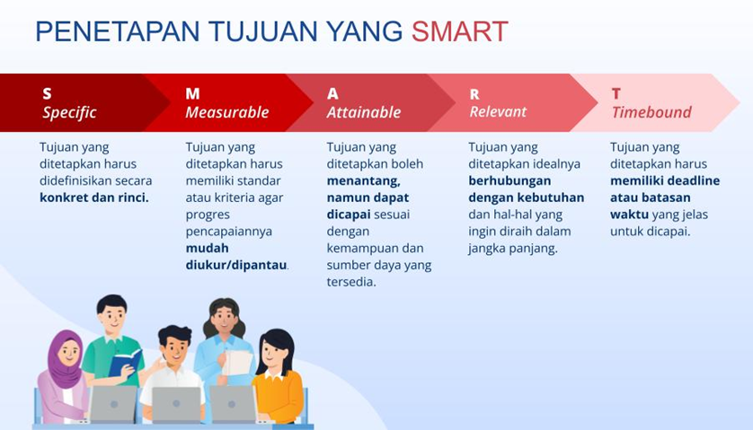

1. Prinsip Penyusunan Tujuan Pembelajaran Kimia yang SMART
Bapak/Ibu, penyusunan tujuan pembelajaran yang efektif sangat penting dalam perencanaan pembelajaran Kimia. Berikut adalah salah satu teknik dalam menyusun tujuan pembelajaran berdasarkan prinsip SMART:

Tujuan pembelajaran yang baik harus mengacu pada prinsip SMART, yaitu:
- Specific (Spesifik)
Tujuan harus jelas dan tidak menimbulkan penafsiran ganda. Dalam konteks Kimia, rumusan tujuan harus menyebutkan secara spesifik konsep atau kompetensi yang ingin dicapai, seperti “menentukan jenis ikatan kimia yang terbentuk dalam senyawa” atau "membuat bentuk senyawa menggunakan bantuan aplikasi Kecerdasan Artificial". - Measurable (Terukur)
Tujuan harus dapat diukur keberhasilannya. Artinya, Bapak/Ibu dapat menentukan apakah murid telah mencapai tujuan tersebut melalui penilaian yang sesuai, sehingga perlu digunakan rubrik yang jelas dan sesuai pada saat asesmen dilaksanakan. - Achievable (Dapat Dicapai)
Tujuan harus realistis untuk dicapai oleh murid sesuai dengan jenjang pendidikan dan kondisi pembelajaran. Bapak/Ibu harus mempertimbangkan latar belakang pengetahuan awal murid dan ketersediaan sumber belajar. - Relevant (Relevan)
Tujuan harus selaras dengan capaian pembelajaran dan konteks kehidupan nyata. Dalam Kimia, hal ini dapat berupa penerapan konsep Kimia dalam fenomena sehari-hari atau integrasi dengan teknologi seperti kecerdasan artifisial. - Time-bound (Berbatas Waktu)
Tujuan harus disusun dengan mempertimbangkan waktu pelaksanaan pembelajaran, misalnya tercapai dalam satu kali pertemuan atau dalam satu unit materi tertentu.
Melalui pemahaman prinsip SMART, Bapak/Ibu dapat merumuskan tujuan pembelajaran Kimia yang lebih terarah, terukur, dan berdampak pada peningkatan kualitas pembelajaran, khususnya saat mengintegrasikan teknologi seperti kecerdasan artifisial dalam proses pembelajaran.
2. Teknik Mengidentifikasi Materi Kimia yang Sulit Dipahami Murid dan Berpotensi Didukung oleh Media Inovatif
Bapak/Ibu, materi ini membahas strategi untuk mengenali berbagai bagian materi Kimia yang cenderung sulit dipahami oleh murid, baik karena sifatnya yang abstrak, kompleks, maupun minimnya pengalaman langsung. Identifikasi materi kimia yang sulit bisa dilihat pada link berikut https://s.id/Identifikasi_Materi_Kimia_Sulit. Nah, Bapak/Ibu akan diajak menganalisis karakteristik berbagai konsep Kimia yang sering menimbulkan miskonsepsi atau hambatan belajar. Kemudian, Bapak/Ibu diarahkan untuk mengeksplorasi potensi penggunaan media inovatif, seperti kecerdasan artifisial, simulasi digital, atau laboratorium virtual, guna memperjelas konsep dan meningkatkan keterlibatan belajar murid.
3. Menentukan Aplikasi Kecerdasan Artifisial (KA) yang Sesuai untuk Mendukung Pencapaian Tujuan Pembelajaran
Bapak/Ibu, materi ini memperkenalkan berbagai aplikasi kecerdasan artifisial yang dapat digunakan dalam pembelajaran Kimia, seperti, ChatGPT, Wayground (Quizizz) AI, dan Canva AI. Bapak/Ibu akan mempelajari kriteria dalam memilih aplikasi KA yang sesuai dengan kompetensi yang Bapak/Ibu ingin capai, serta mengevaluasi manfaatnya berdasarkan efektivitas, kemudahan akses, dan kesesuaian dengan kebutuhan murid. Bapak/Ibu diharapkan mampu membuat keputusan tepat dalam mengintegrasikan teknologi berbasis KA untuk mendukung hasil belajar kimia secara lebih optimal.
4. Penyusunan draft modul ajar: tujuan pembelajaran dan media berbasis Kecerdasan Artifisial (KA)
Materi ini membimbing Bapak/Ibu untuk menyusun bagian awal rencana pelaksanaan pembelajaran (modul ajar) secara sistematis, dimulai dari perumusan tujuan pembelajaran yang SMART hingga pemilihan media pembelajaran berbasis KA yang relevan. Bapak/Ibu akan mempraktikkan penyusunan draft modul ajar yang responsif terhadap tantangan pembelajaran modern, dengan memperhatikan integrasi media KA dalam konteks model pembelajaran, pendekatan saintifik, dan karakteristik murid. Materi ini bertujuan menghasilkan perencanaan pembelajaran yang inovatif dan adaptif terhadap perkembangan teknologi. Contoh modul ajar kimia yang menampilkan tujuan pembelajaran dan bagian media berbasis KA dapat diakses melalui Tautan Contoh Modul Ajar atau QR Code berikut: